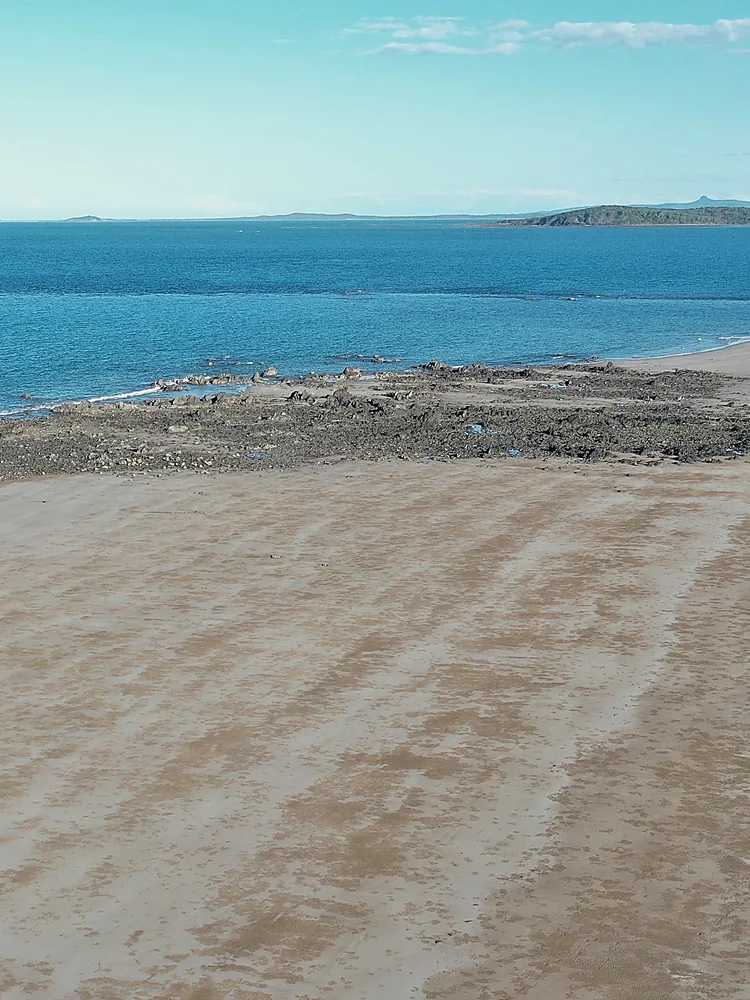
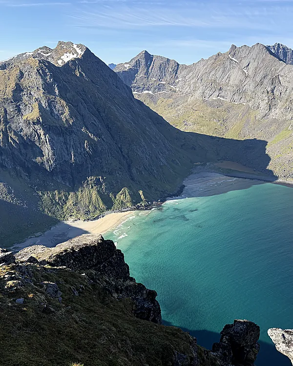
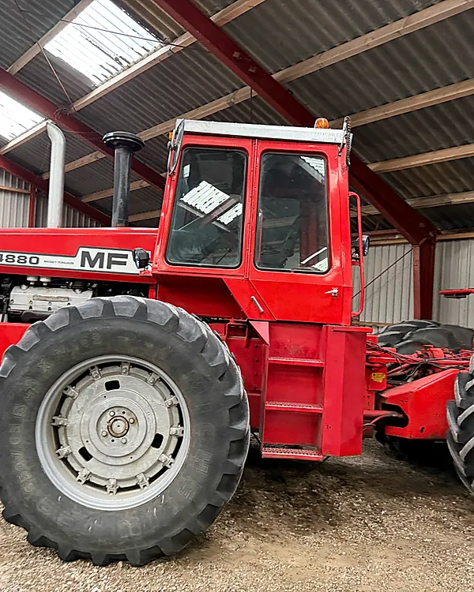
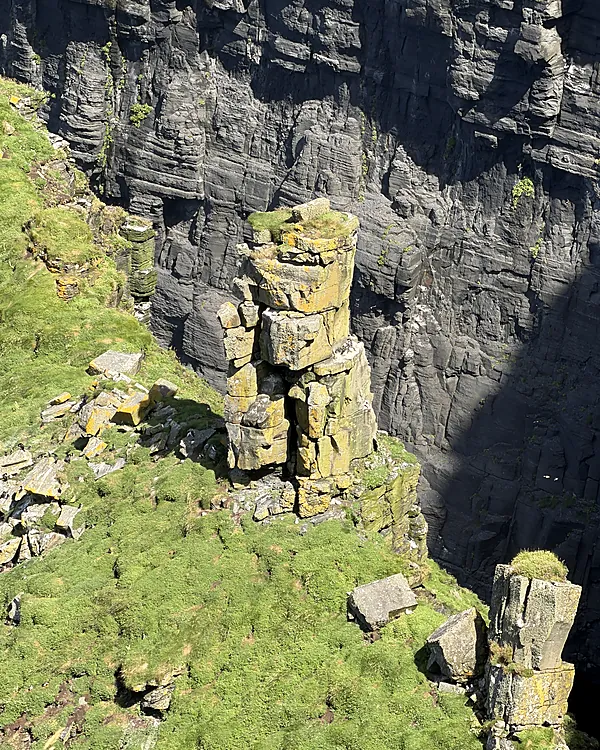
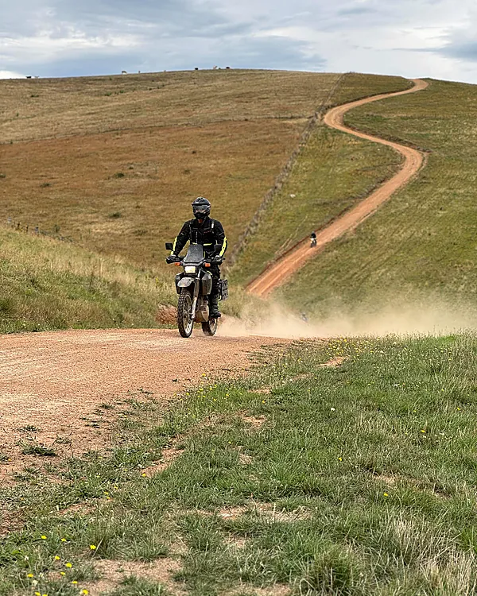
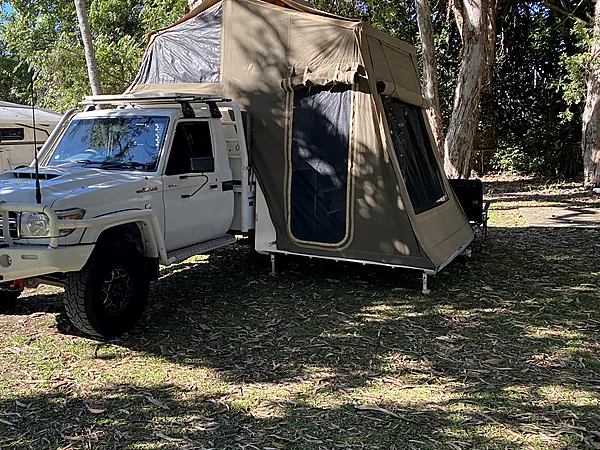
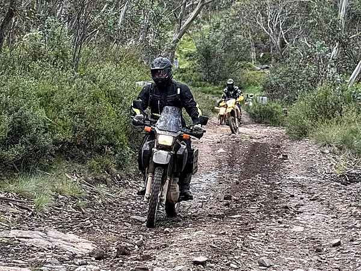
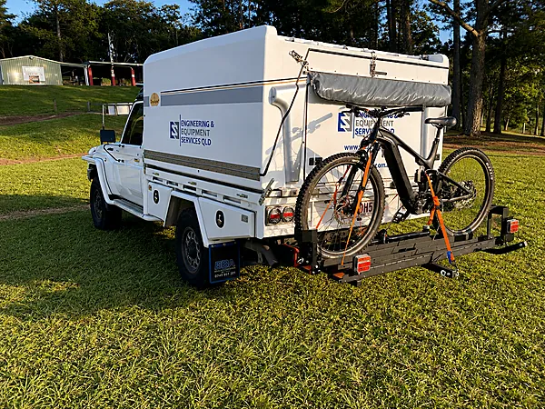

Kulhavn is an engineering-led adventure and expedition brand founded by Andrew Mitchell CPEng — built on a decade of engineering Australia's coal port infrastructure and a lifetime spent on the road. At home, that's a 79 Series LandCruiser with Travelander camper on some routes, a Suzuki DR650 on others, and an E-MTB for the ground nothing else reaches. Overseas, it's on foot, on borrowed wheels, and whatever the terrain calls for.
The name is Danish for "coal port" — ten years engineering Australia's coal export infrastructure, and a nod to pioneering Danish ancestry behind it.
The current series runs Norway into Denmark into Ireland, posting in sequence. Lofoten's Ryten and Blåmanen are up now, Denmark and the Ireland ancestry pivot are next. Every post carries real route data — no filler.
Every route is planned around terrain, engineering interest and a genuine family connection to the country. In Australia, that's the 79 Series with Travelander or the DR650, depending on the leg, with the E-MTB for the ground nothing else reaches. Norway, Denmark and Ireland run on foot and local transport — terrain and ancestry drive the route, not the rig. Relive tracks every ride.




Kulhavn Australia routes run on whichever rig actually suits the ground — never both at once. The 79 Series and Travelander go where range and camp matter most. The DR650 goes where a lighter, simpler bike gets further. The E-MTB handles the singletrack neither one can reach. Relive captures every ride.



Kulhavn is built on a simple idea: combine genuine engineering experience, infrastructure curiosity and remote field travel into content worth following — not manufactured adventure, not lifestyle filler.
The riding is real, so the content is real. Every route is tracked on Relive, documented as it happens, and posted without the sentimentality. Terrain does the talking.
Engineering credibility is the differentiator — always present, never shouted. Kulhavn sits beside the EES QLD legacy, not in front of it.
This is a long build. Audience and content come first. Structure follows once there's something worth structuring.
Kulhavn does not replace EES QLD. It sits beside it.
EES QLD remains the serious engineering business — certification, project delivery, industrial consulting, RPEQ sign-off and client delivery. That legacy doesn't change.
Kulhavn is the public-facing expedition and infrastructure media brand that the EES QLD legacy makes credible. Without the engineering background, Kulhavn is just another travel account. With it, Kulhavn is something else — technically grounded and genuinely field-tested.
Founded by Andrew Mitchell CPEng, Principal Engineer of EES QLD. The credibility is real because the work is real.
Kulhavn sits beside the existing engineering business, not in front of it — separated where it needs to be, and properly advised before anything commercial is committed to.
Kulhavn is not a tour company. It's an engineering-led adventure brand documenting real routes in real time. A small number of people may be invited to join a leg, collaborate on content, or partner with the brand.
Whether you want to follow the journey, join a route leg, partner your brand or sponsor a leg of the operation — reach out. Kulhavn is selective by design.
Make contactkulhavn@eesqld.com.au · @kulhavn
Kulhavn · Powered by the EES QLD legacy · Founded by Andrew Mitchell CPEng